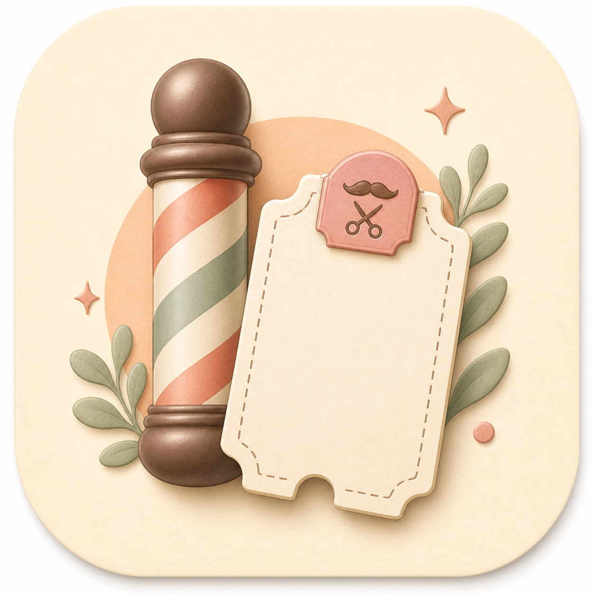
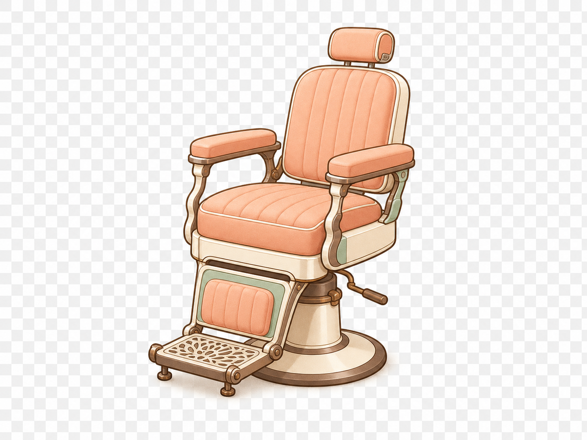
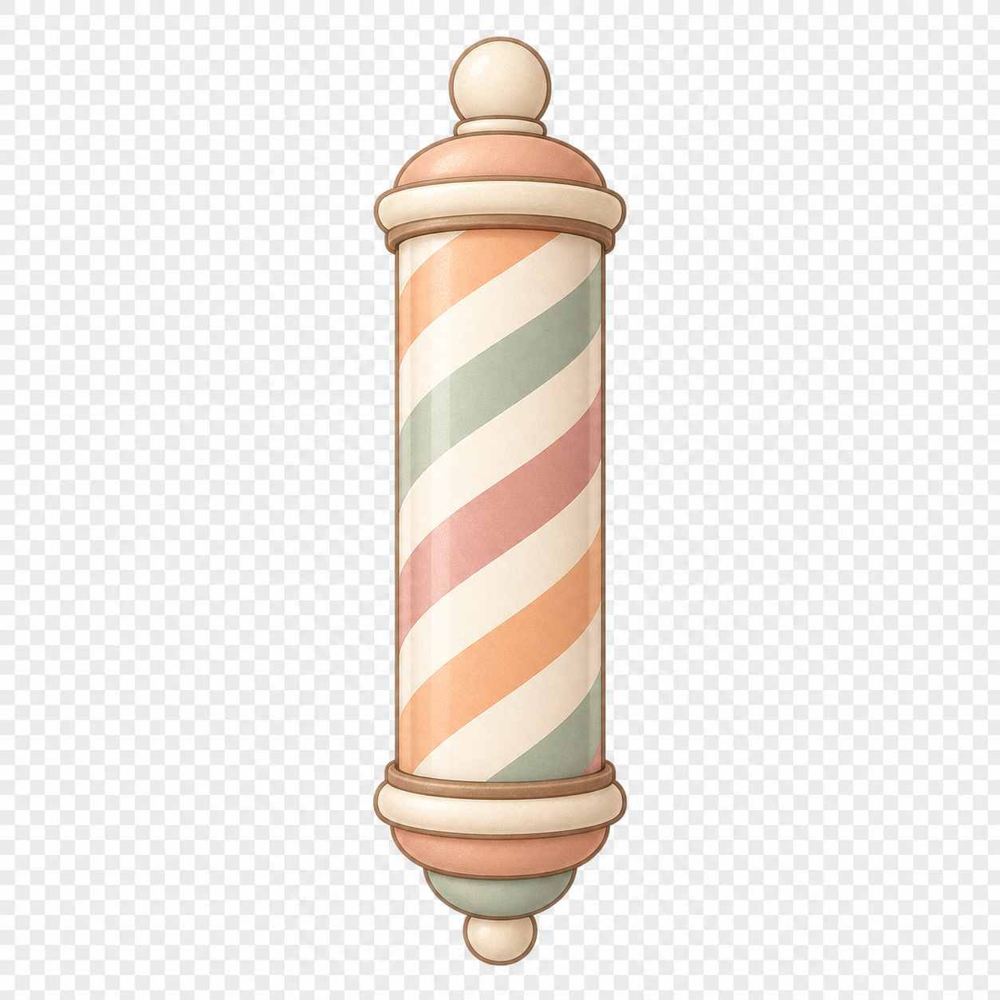
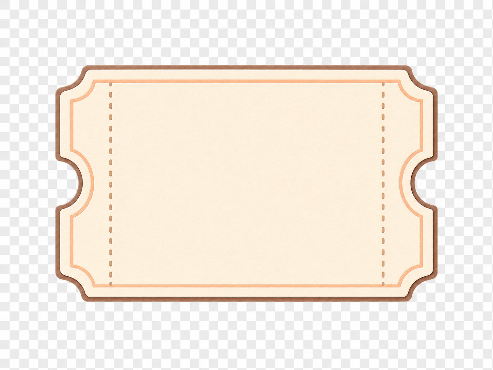
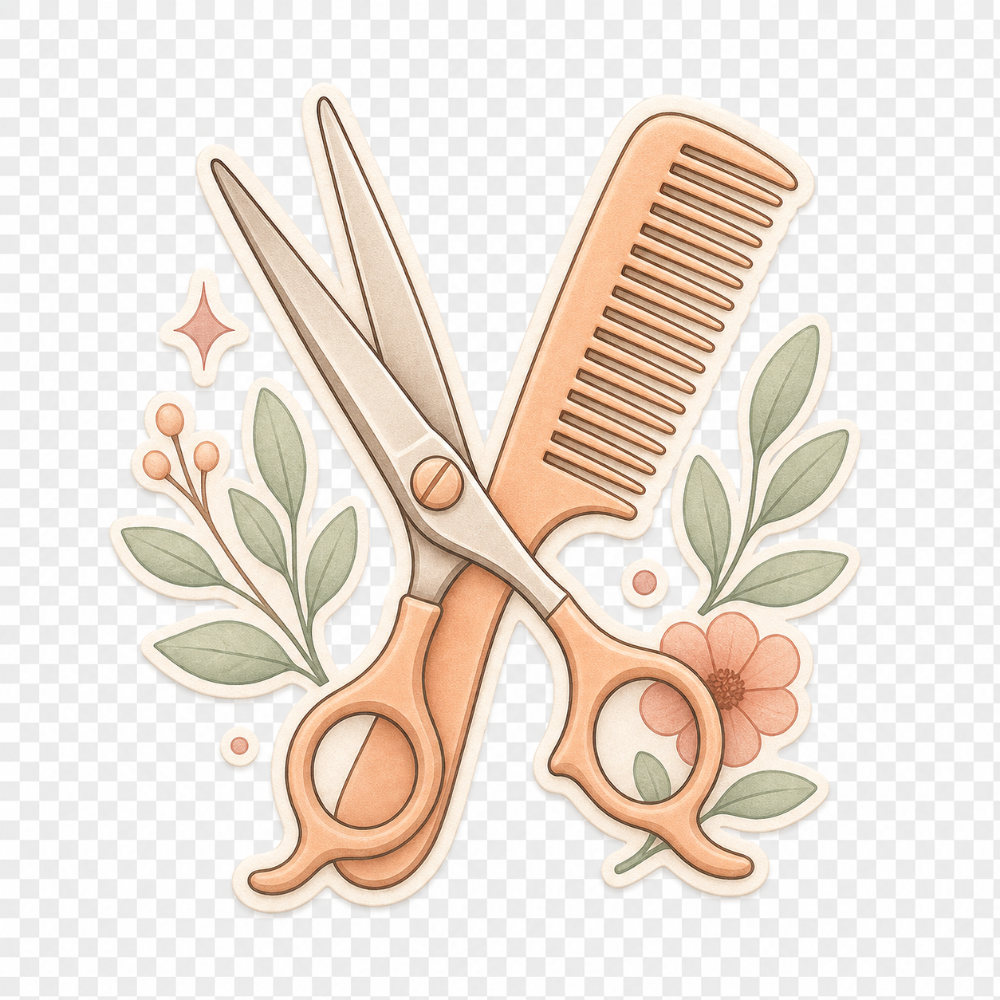
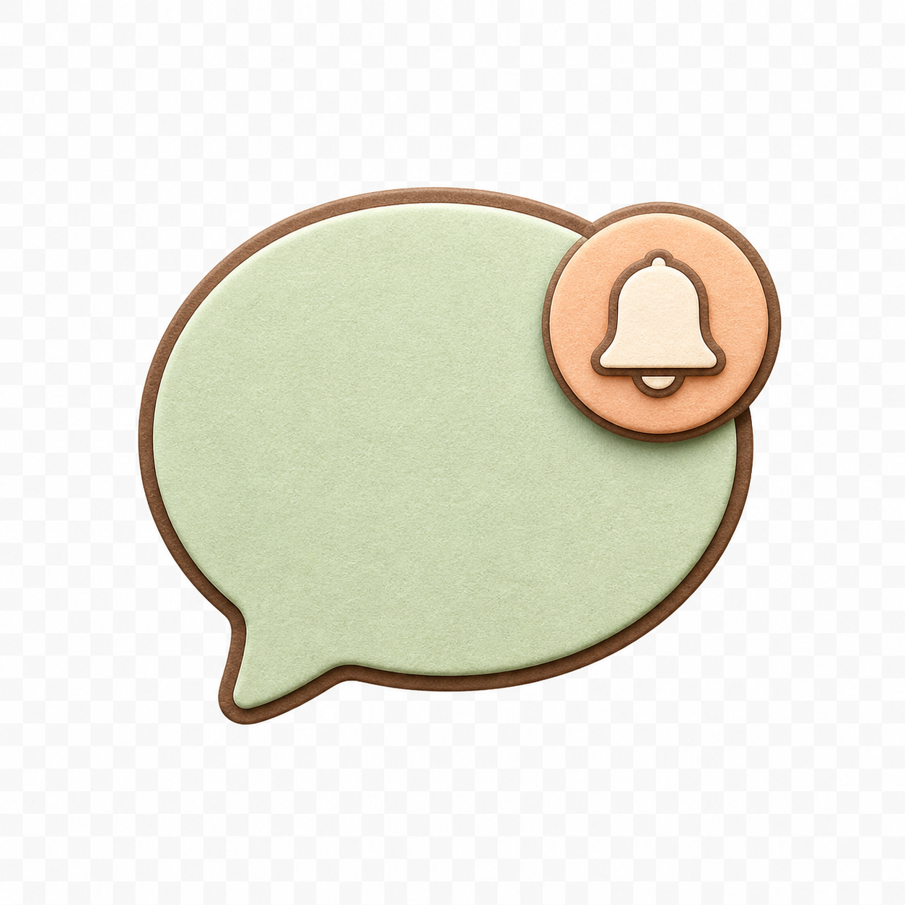
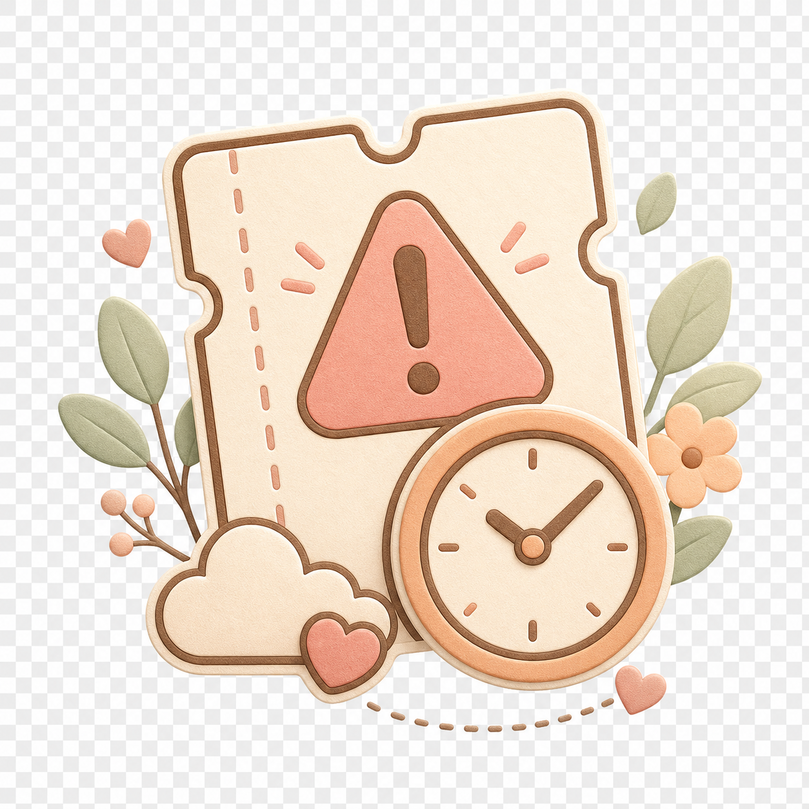
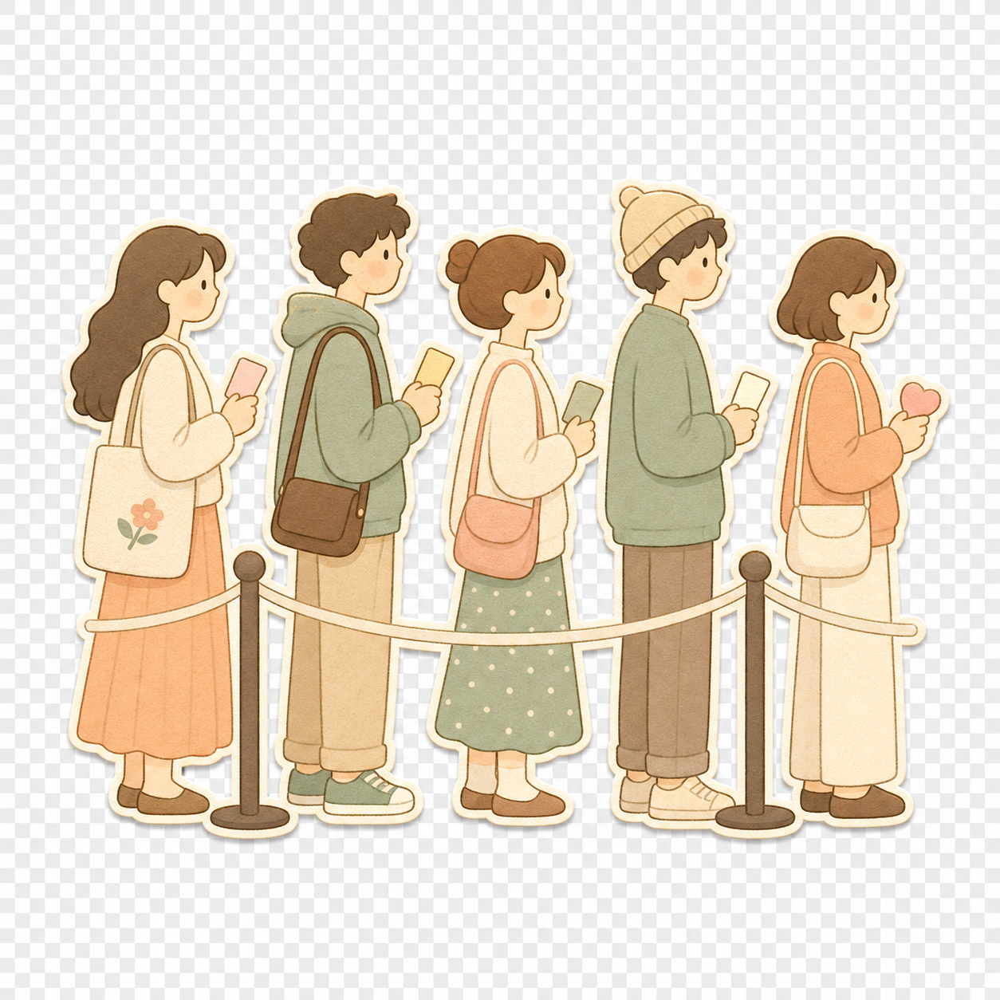

Generated Pastel Paper Queue Assets
Raster PNG asset pack generated from the Pastel Paper Queue direction.
These PNGs currently do not contain a real alpha channel. Use them as visual/source assets until transparent cutouts are cleaned or regenerated.

app-icon-pastel.pngapp icon / brand mark
barber-chair-cutout.pngempty state / status
barber-pole-cutout.pngshop cue
queue-ticket-cutout.pngqueue tracking
scissors-comb-cutout.pngservice cue
line-notification-cutout.pngnotification cue
no-show-warning-cutout.pnglate/no-show
walk-in-queue-cutout.pngwalk-in queue